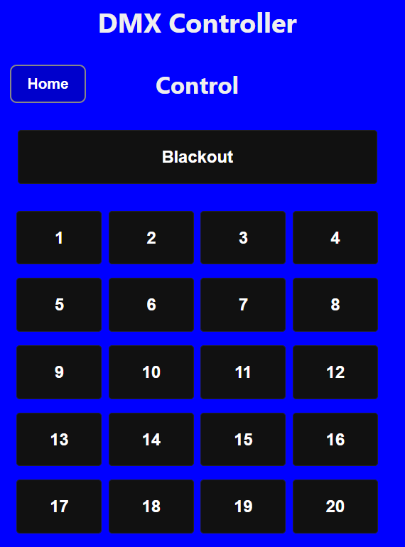

This application can be used to define DMX universes, called DMX presets or simply presets as of now. With this web application you can create, edit, and manage DMX presets, which are collections of DMX channel values that can be activated to control lighting fixtures.
Presets (DMX Presets) is a set of 512 DMX channels with values, which equals to one DMX universe. DMX fixtures can be set to a (start) DMX address and subsequent values decide how the DMX fixture behaves. DMX values have a range from 0 to 255.
Example: assume a moving head DMX fixture is set to DMX channel 40. In the manual, it can be checked that the first value (channel 40) is for the DMX mode and if set to RGB Static Mode (value 3), the next channels (41, 42, 43) are for the Red, Green and Blue values. To set this fixture to a full purple (red + blue to max value) color the following values have to be used:
``` 40: 3 41: 255 (red) 42: 0 (green) 43: 255 (blue) ``` Multiple fixtures (with different DMX addresses) can be programmed in a single preset. Make sure the range of channels for each fixture does not overlap with other fixtures, otherwise they will interfere with each other.On the Control page of the website, the programs can be selected, see the screenshot below.

The blackout button sends 512 zero (0) values to all 512 DMX values, typically turning off all light of the DMX fixtures.
The current selected preset is displayed in yellow.
The first 20 active presets are shown on the screen which can be easily selected by pressing the button.
This button shows the manual which is currently displayed.